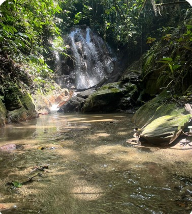
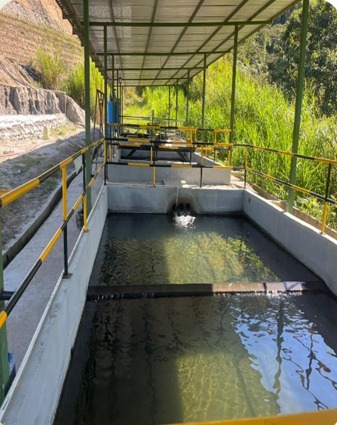
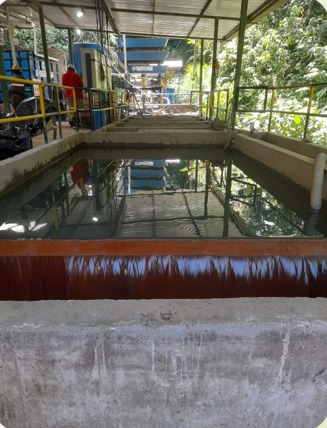
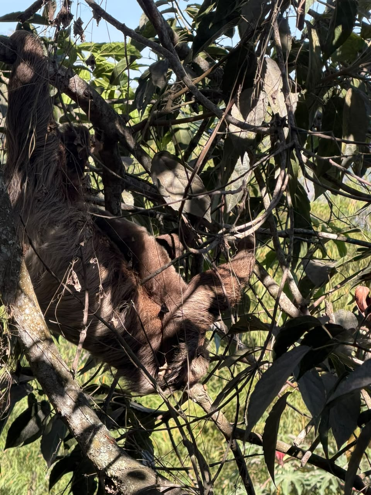
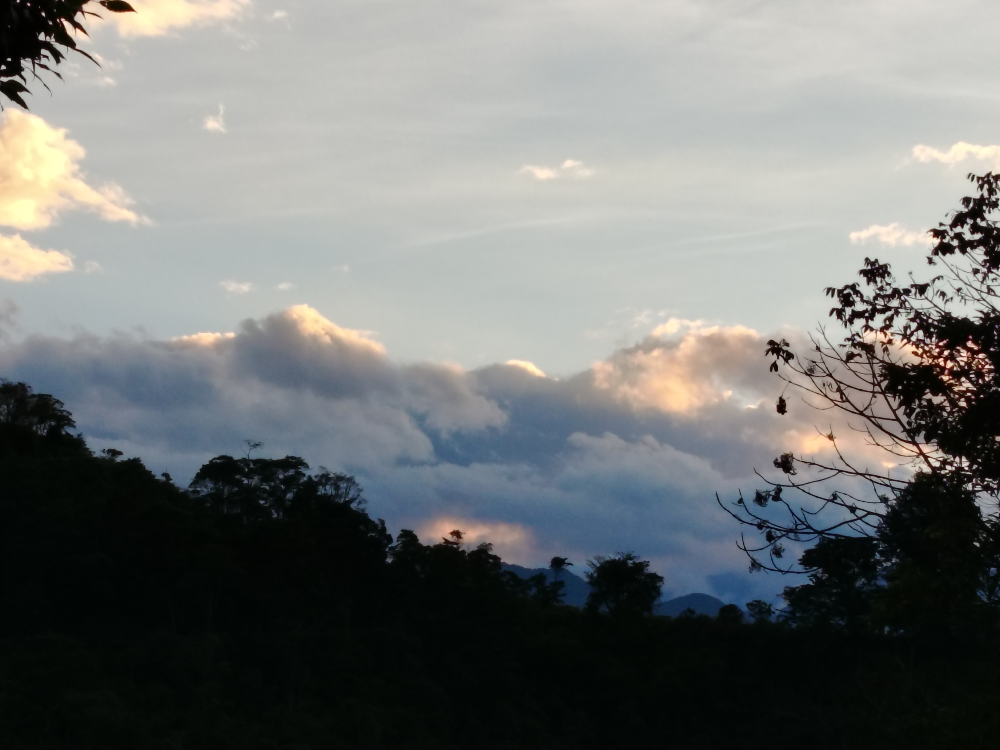

Relación armónica con el entorno, sostenibilidad social y desarrollo regional en El Líbano.





En la Mina El Gran Porvenir creemos firmemente que la minería moderna y en evolución debe coexistir en armonía con su entorno. Desarrollamos programas de gestión eficiente del recurso hídrico, optimización energética y un fuerte vínculo participativo con las comunidades de la región.



Nuestro compromiso trasciende las puertas de la planta. Trabajamos activamente de la mano con la comunidad vecina mediante iniciativas de alto impacto social:
Construimos tejido social con hechos reales, fortaleciendo los lazos de confianza y cooperación mutua con los habitantes de nuestra zona de influencia.

Operamos bajo una rigurosa conciencia ecológica, implementando prácticas que minimizan el impacto sobre el medio ambiente natural:
El equilibrio entre la producción industrial y la conservación ambiental es nuestra garantía para un desarrollo minero verdaderamente sostenible.